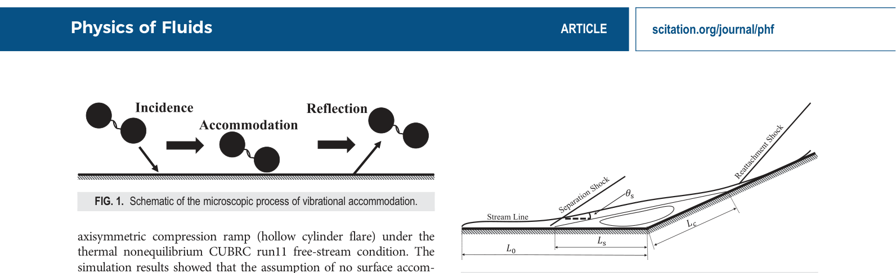
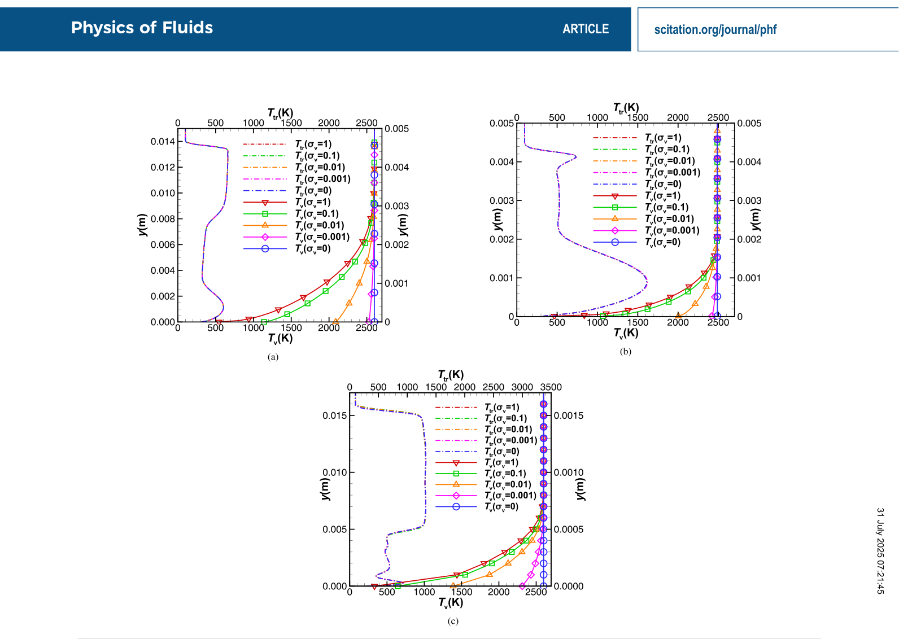
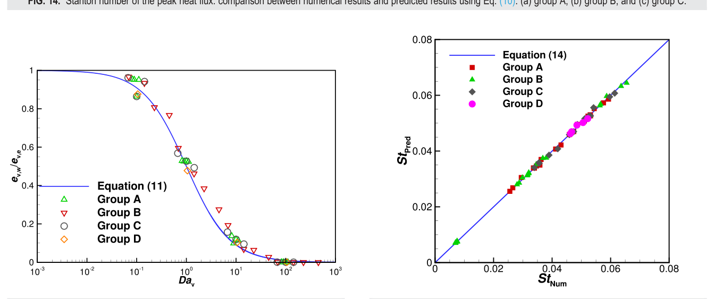
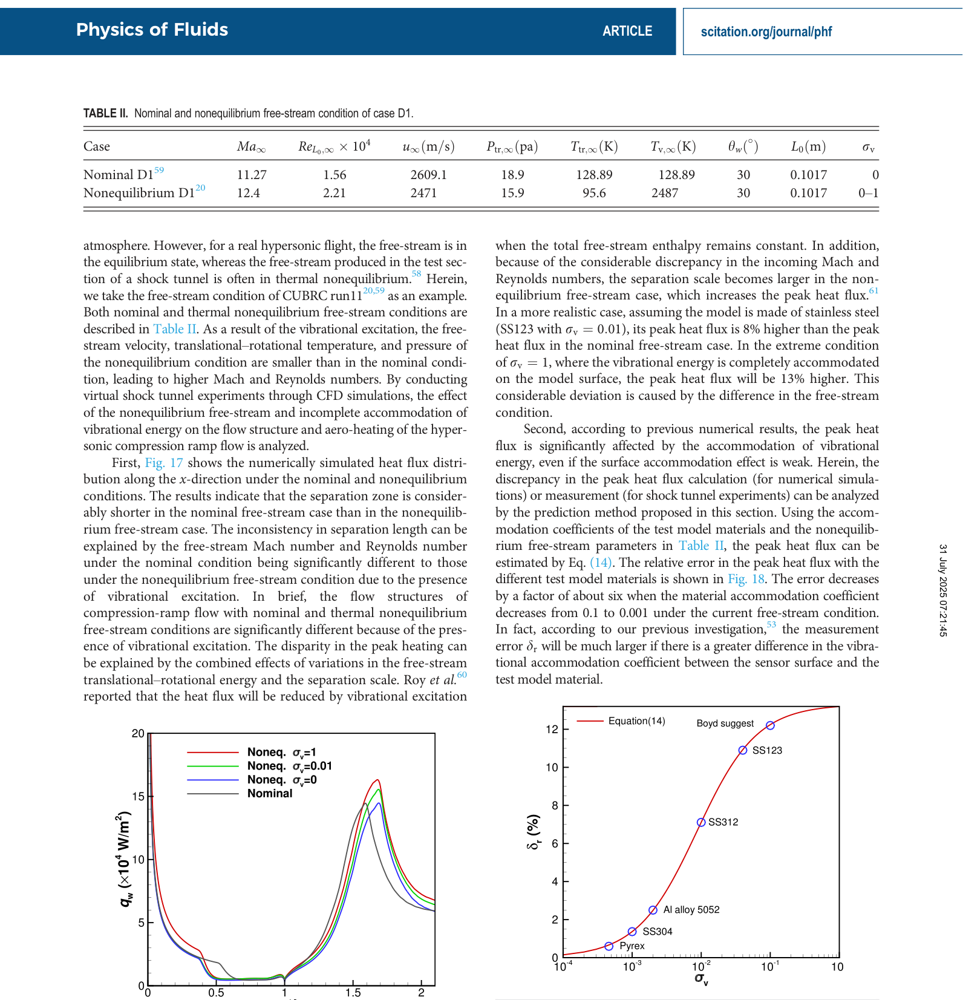

01中文摘要
在高超声速激波风洞中，高温驻室气体快速膨胀，振动能来不及松弛，试验段常出现热非平衡来流，显著影响测得热流。本文数值研究低至中等雷诺数、高马赫数下高超声速压缩斜坡流动，考察振动能适应不完全对分离结构和再附区峰值热流的影响。结果表明，振动能适应对分离区长度影响不明显，但强烈影响分离斜坡的峰值热流。把峰值热流分解为平动-转动分量 qtr 和振动分量 qv 后，qv/qtr 可表征振动能非平衡程度。作者提出计及振动能适应不完全的峰值热流预测公式，并用激波风洞测量验证，指出忽略振动非平衡可使总峰值热流偏差达 13%。
原始摘要（英文/原文）
In hypersonic shock tunnel experiments, the high-temperature reservoir gas expands and accelerates so rapidly that there is not enough time for vibrational energy relaxation. As a result, thermal nonequilibrium gas flow is frequently encountered in the test section, and this significantly affects the measured heat flux. In this paper, hypersonic compression-ramp flows are studied numerically to investigate the effect of incomplete vibrational energy accommodation on the separation flow structure and peak heat flux in the reattachment region under low-tomedium Reynolds number and high Mach number conditions. Numerical results and theoretical analysis suggest that the vibrational energy accommodation has no noticeable impact on the length scale of the separation zone, but strongly influences the peak heat flux of the separated ramp flows. Decomposing the peak heat flux into translational–rotational energy and vibrational energy components, qtr and qv, respectively, we find that qv=qtr characterizes the nonequilibrium degree of the vibrational energy accommodation. A formula for predicting the peak heat flux is then proposed, taking the effect of incomplete vibrational energy accommodation into consideration. Finally, surface heat flux measurements in a hypersonic shock tunnel indicate that a deviation of up to 13% in total peak heat flux could arise if vibrational energy accommodation is not considered under the vibrationally excited free-stream condition.
02阅读说明
Physics of Fluids 研究论文（2023，14 页），数值+理论型。bundle 815 行全文与 17 张抓图齐全，表 I/II 和式(1)–(14)基本可读；式(5)(9)(12)–(14)经原 PDF 文本层核对。式(12)中 c_p 的归一化定义正文未说明，相关处已标注受限于材料。页码均为 PDF 页码。 文章类型：期刊
03一句话核心与三句话摘要
双温度模拟表明 rv 只改变振动热流；提出 Da 型显式峰值热流公式，忽略适应偏差可达 13%。
- 针对激波风洞振动激发来流，用双温度 TPG 模型数值模拟高超声速压缩拐角流动，考察不完全振动能适应对分离结构与峰值热流的影响。 原文明确
- rv 几乎不改变分离区长度、摩阻和压力，但显著改变振动热流 qv 与峰值热流；qtr 与 qv 可分别确定。 原文明确
- 作者提出以 Da_v,a 为核心的显式峰值热流公式，并指出忽略不完全振动适应可造成最高约 13% 的测量偏差。 原文明确
04核心内容清单
| 要点 | 类型 | 重要性 | 原文依据 | 属性 |
|---|---|---|---|---|
| 激波风洞试验段来流常为热非平衡（Ttr 低、Tv 高），CPG 假设不适用于峰值热流预测。 | 研究背景 | A | p.2 第I节、摘要 | 原文明确 |
| 采用 Park 双温度 TPG 框架、Landau–Teller V–T 松弛与 Smoluchowski 振动温度跳跃。 | 模型 | A | p.4 式(1)–(5) | 原文明确 |
| 所有工况 Da=sf/sv 在 4.48×10^-7–5.21×10^-5 之间，远小于 1，V–T 能量松弛可忽略。 | 无量纲判据 | A | p.3 表I；p.7 第IV.A节 | 原文明确 |
| 峰值加热点处 Ttr 剖面几乎不随 rv 变化，Tv 剖面随 rv 变化；qtr 与 qv 可分离。 | 核心现象 | A | p.7–8 图10 | 原文明确 |
| 分离区长度、摩阻系数和压力系数对 rv 不敏感。 | 流动结构 | A | p.7–9 图11、图12 | 原文明确 |
| qv 随 rv 增大而增大，qtr 基本不变，故峰值热流随 rv 升高。 | 热流机制 | A | p.8 第IV.B节；图13、图14 | 原文明确 |
| 式(10)（qw=qtr+qv）与数值结果总体吻合，但峰值热流被略微低估。 | 模型验证 | B | p.8–9 图13、图14 | 原文明确 |
| 低估部分归因于 Smoluchowski 条件高估壁温，使 ev,w 偏大。 | 误差来源 | B | p.8–9 | 原文明确 |
| 式(11)–(12) 的 Da_v,a 判据能较好预测壁面振动能。 | 理论验证 | A | p.9–11 图15 | 原文明确 |
| 式(13) 用分离尺度估计 Lc，式(14) 给出全显式峰值热流公式，且与全工况数值一致。 | 预测公式 | A | p.9–11 式(13)–(14)、图16 | 原文明确 |
| 热非平衡来流的分离区比标称来流更长，峰值热流更高；不锈钢 rv=0.01 高 8%，rv=1 高 13%。 | 工程对比 | A | p.12 表II、图17 | 原文明确 |
| rv 从 0.1 降到 0.001，峰值热流相对误差约降为 1/6。 | 误差趋势 | A | p.12 图18 | 原文明确 |
05引言：研究问题与领域缺口
压缩拐角是激波/边界层干扰的典型构型，激波风洞反射激波加热储气后，喷管快速膨胀使振动能来不及松弛，试验段常出现 Ttr≈100 K、Tv≈2000 K 的热非平衡来流。Park 双温度框架下总热流可分为平动-转动分量 qtr 与振动分量 qv；CPG 假设不适用，不锈钢/铝合金表面 rv 仅约 0.001–0.01。已有压缩拐角研究很少定量讨论 rv 对分离结构和再附区峰值热流的影响，也缺少显式预测公式（p.2 第I节）。本文目标是用 TPG 数值模拟与理论分析给出考虑不完全振动适应的峰值热流预测方法（p.2 摘要）。
06流动条件与几何构型
| 项目 | 数值/描述 | 依据 | 备注 |
|---|---|---|---|
| A1 | Ma∞=8，Re_L∞=2×10^4，Ttr∞=100 K，Tv∞=2600 K，Tw=300 K，θw=30°，rv=0–1，L0=0.1017 m，sf/sv=4.48×10^-7，Da_v,a(rv=1)=81.9 | p.3 表I | |
| A2 | Ma∞=10，Re=2×10^4，其余同 A1；sf/sv=1.14×10^-6，Da_v,a(rv=1)=89.4 | p.3 表I | |
| A3 | Ma∞=12，Re=2×10^4，其余同 A1；sf/sv=2.60×10^-6，Da_v,a(rv=1)=99.9 | p.3 表I | |
| A4 | Ma∞=14，Re=2×10^4，其余同 A1；sf/sv=5.30×10^-6，Da_v,a(rv=1)=110.5 | p.3 表I | |
| B1 | Ma∞=12，Re=1×10^4，Ttr∞=100 K，Tv∞=2600 K，Tw=300 K，θw=30°，L0=0.1017 m；sf/sv=1.30×10^-6，Da_v,a(rv=1)=68.9 | p.3 表I | |
| B2 | Ma∞=12，Re=4×10^4；sf/sv=5.21×10^-6，Da_v,a(rv=1)=143.0 | p.3 表I | |
| B3 | Ma∞=12，Re=10×10^4；sf/sv=1.30×10^-5，Da_v,a(rv=1)=227.3 | p.3 表I | |
| B4 | Ma∞=12，Re=40×10^4；sf/sv=5.21×10^-5，Da_v,a(rv=1)=453.6 | p.3 表I | |
| C1 | Ma∞=12，Re=2×10^4，Ttr∞=100 K，Tv∞=2600 K，Tw=300 K，θw=25°，L0=0.1017 m；sf/sv=2.60×10^-6，Da_v,a(rv=1)=67.2 | p.3 表I | |
| C2 | 同 C1 但 θw=30°；Da_v,a(rv=1)=99.9 | p.3 表I | |
| C3 | 同 C1 但 θw=35°；Da_v,a(rv=1)=143.7 | p.3 表I | |
| D1 | Ma∞=12.4，Re=2.21×10^4，Ttr∞=95.6 K，Tv∞=2487 K，Tw=297.22 K，θw=30°，rv=0–1，L0=0.1017 m；sf/sv=2.72×10^-6，Da_v,a(rv=1)=104.9 | p.3 表I | |
| 所有数值工况的 rv 取值 | 每个工况 rv=1、0.1、0.01、0.001 或 0 | p.3–4 第II节 | |
| 来流气体与壁面 | 氮气；壁面速度无滑移、Ttr=Tw 等温；Tv 用 Smoluchowski 跳跃 (5) | p.4 式(3)–(5) | |
| 激波风洞标称 D1 | Ma∞=11.27，Re=1.56×10^4，u∞=2609.1 m/s，Ptr=18.9 Pa，Ttr=128.89 K，Tv=128.89 K，θw=30°，L0=0.1017 m，rv=0 | p.12 表II | |
| 激波风洞非平衡 D1 | Ma∞=12.4，Re=2.21×10^4，u∞=2471 m/s，Ptr=15.9 Pa，Ttr=95.6 K，Tv=2487 K，θw=30°，L0=0.1017 m，rv=0–1 | p.12 表II | |
| 模型材料 rv | 不锈钢与铝合金实验表面 rv 约 0.001–0.01（引 Black 等、Parish & Yaney、Boyd 等） | p.2 第I节；p.12 图18 |
07核心现象与关键参数
| 参数 | 定义 | 数值 | 关系/说明 | 依据 |
|---|---|---|---|---|
| rv | 振动能适应系数 | 0–1（工况取 1、0.1、0.01、0.001、0） | 控制壁面 ev,w 与 qv | p.3–4 表I/第II节 |
| Da | V–T 非平衡判据，Da=sf/sv | 4.48×10^-7–5.21×10^-5 | Da≪1 时 V–T 松弛可忽略 | p.3 表I；p.7 式(7) |
| sf | 流动特征时间 | sf=L/u∞，L=0.22 m | 与 sv 比较得 Da | p.7 式(8) |
| Da_v,a | 壁面振动能适应 Damköhler 数 | rv=1 时 67.2–453.6（表I） | ev,w/ev,e=1/(1+Da_v,a) | p.8–9 式(11)–(12) |
| Prtr | 平动-转动 Prandtl 数 | 0.72 | ktr=μcp,tr/Prtr | p.4 式(4) |
| Prv | 振动 Prandtl 数 | 5/6 | kv=μcv,v/Prv | p.4 式(4) |
| βPr | 热导率差异因子 | Prtr/Prv=0.864 | qv/qtr=βPr(2/3)(ev,e−ev,w)/(htr,aw−htr,w) | p.7 式(9)；p.8 |
| L0 | 模型平板长度（参考长度） | 0.1017 m | Re_L0,∞=ρ∞u∞L0/μ∞ | p.3 表I |
| L | 计算 sf 所用模型长度 | 0.22 m | sf=L/u∞ | p.7 式(8) |
| Lc | 再附区边界层特征长度 | Lc=Ls tanθs/[sinθw−tanθs cosθw] | Rel,e=ρe ue Lc/μe | p.8 式(13) |
| θs | 分离角 | θs=0.755θw^{3/8}/(Ma∞^{1/16}Re_L0,∞^{3/32}) | 用于 Lc | p.8 式(13) |
| γv | 自由流振动能与焓差之比 | γv=ev,e/(htr,aw−htr,w) | 式(14)中的系数 | p.10 |
| St | Stanton 数 | St=qw/[ρ∞u∞(htr,aw−htr,w)] | 用于图4–图18的峰值热流比较 | p.4 式(6) |
| 网格与 CFL | 数值分辨率 | 932×200、1456×300、2185×450；CFL=0.1 | 中网格与 CFL≤0.1 足够 | p.4–5 第III.A节 |
| 稳态时间 | 统计峰值热流的时间窗 | t=11–12 ms，间隔 0.1 ms | 摩阻与 St 分布不再变化 | p.5 第III.B节 |
08方法与数据
二维压缩拐角：长 L0=0.1017 m 平板接倾角 θw 的斜面（图2，p.3）。表 I 给出 A1–A4（变 Ma∞=8–14）、B1–B4（变 Re=1×10^4–40×10^4）、C1–C3（变 θw=25°–35°）与实验条件 D1，共 12 个工况；每个工况 rv 取 1、0.1、0.01、0.001 或 0（p.3 表I）。采用双温度 TPG 的 Navier–Stokes–Fourier 方程 (1)，V–T 松弛用 Landau–Teller 模型 (2)，Sutherland 黏性 (3)，Fourier 热流 (4)；壁面速度无滑移、Ttr 等温，振动温度跳跃用 Smoluchowski 模型 (5)；Stanton 数定义见式(6)，V–T 非平衡判据 Da=sf/sv（式7），sf=L/u∞，L=0.22 m（式8）（p.4）。求解器为 OpenFOAM 平台的 hy2Foam，有限体积法，时间一阶 Euler，空间二阶中心-迎风（Kurganov–Tadmor）；三套网格 932×200、1456×300、2185×450，CFL 取 0.2/0.1/0.05 后选 0.1；11–12 ms、间隔 0.1 ms 判定稳态（p.4–5 第III节）。验证包括 Rudy 18° 楔（Ma14.1、Re1.04×10^5、Ttr88.89 K、Tw297.22 K）、Deepak 24° Condition B（0.99 kPa、1160 K、5470 m/s，峰值误差 2%）以及平板 TPG 算例对 Yu 等理论（rv=0.1 时最大 10%）（p.5–6）。
| 项目 | 内容 | 依据 | 备注 |
|---|---|---|---|
| 数值框架 | hy2Foam（OpenFOAM）有限体积求解双温度 Navier–Stokes–Fourier 方程 | p.4 第II节 | |
| 热化学模型 | Park 双温度 TPG；无化学/电离；V–T 用 Landau–Teller；Sutherland 黏性；Fourier 双热流 | p.4 式(1)–(4) | |
| 壁面条件 | 速度无滑移、Ttr=Tw 等温；Tv 用 Smoluchowski 温度跳跃 (5) | p.4 式(5) | |
| 空间/时间离散 | 时间一阶 Euler；空间二阶中心-迎风（Kurganov–Tadmor） | p.4 | |
| 网格独立性 | 粗/中/细三套网格 932×200、1456×300、2185×450；中网格峰值 St 与细网格几乎相同 | p.4–5 图4 | |
| CFL 独立性 | CFL=0.2、0.1、0.05 得到相同曲线，取 0.1 | p.5 图5 | |
| 稳态判定 | T=11–12 ms、ΔT=0.1 ms 内摩阻与 St 分布无差异 | p.5 图6、图7 | |
| 压缩拐角验证 | Rudy 18° 楔与 Deepak 24° Condition B；后者峰值热流相对误差 2% | p.5–6 图8 | |
| 振动热流验证 | 平板 TPG 算例与 Yu 等理论比较，rv=0.1 时最大相对误差 10% | p.6 图9 | |
| 理论预测流程 | qtr/qv 分解 (9)–(10) → Da_v,a (11)–(12) → Lc (13) → 显式 qw (14) | p.7–11 |
09核心推导与公式
把壁面总热流分解为平动-转动与振动两部分；用 Smoluchowski 振动温度跳跃和壁面振动能平衡定义壁面适应 Damköhler 数 Da_v,a；用剪切流边界层标度给出 Da_v,a 的显式表达，再用分离尺度估计边界层特征长度，最终合并为只含来流参数与 rv 的峰值热流公式。
关键假设
- 双温度 TPG：Ttr 与 Tv 分离，无化学反应与电离。
- Da=sf/sv≪1，V–T 松弛在流动时间内可忽略，振动方程与平动-转动方程解耦。
- 再附区峰值点可视为斜驻点边界层，法向驻点分量对峰值 qtr 贡献小于 5%，可忽略。
- 壁面 Ttr=Tw 等温，振动能不完全适应由 Smoluchowski 跳跃描述。
- 边界层外缘参数用等效双激波无粘模型估计，分离长度 Ls 用 Fang 等关联式。
推导过程
平动-转动与振动能量可分别确定，故 qw=qtr+qv；由平板振动激发边界层理论，qv/qtr 写成式(9)，从而得到式(10)。
壁面振动能不完全适应时，壁面处振动能与其法向梯度满足式(5)；λ 为分子平均自由程，γ 为比热比。
定义 Da_v,a 表征壁面振动能适应程度，壁面与边界层外缘振动能之比为式(11)。
忽略法向驻点分量，只保留剪切流贡献，Da_v,a 由式(12)给出；其中 Rel,e=ρe ue Lc/μe，Pr_v 取 5/6。受限于材料，式(12)中 c_p 的归一化定义正文未说明，无法确认其量纲处理。
再附区边界层特征长度用分离长度 Ls 与分离角 θs 表示，θs 由斜坡角、Ma∞ 与 Re_L0,∞ 的幂次关联式给出。
把式(11)代入式(10)，并引入 γv=ev,e/(htr,aw−htr,w)，得到只含 Da_v,a 与 γv 的显式式(14)。
适用边界：推导依赖 Da≪1、法向驻点分量 <5%、二维稳态斜驻点模型与经验分离长度关联式；式(12)中 c_p 的归一化定义受限于材料无法确认。Smoluchowski 条件在高 rv 下高估壁温，使式(10)/(14)略低估峰值热流。公式只在表 I 的 Ma 8–14、Re 1×10^4–4×10^5、θw 25°–35°、氮气条件下验证，外推到其他气体、高焓真实气体或三维流动未验证。
10结果：主要发现与关键证据
图10 显示峰值加热点处 Ttr 剖面几乎不随 rv 改变，而 Tv 剖面随 rv 明显变化；由此 qtr 与 rv 解耦，qtr 与 qv 可分别确定（p.7–8）。图11、图12 显示摩阻系数与压力系数分布随 rv 不变，说明分离区长度与气动力不受振动适应影响（p.7–9）。qv/qtr 用式(9)表示，qw 用式(10)叠加；图13/14 表明式(10)与数值结果总体吻合，但因 Smoluchowski 条件高估壁温、进而高估 ev,w，峰值热流被略微低估（p.7–9）。引入壁面振动能适应判据 ev,w/ev,e=1/(1+Da_v,a)（式11），并用剪切流边界层标度给出 Da_v,a（式12）；图15 表明式(12)预测的壁面振动能与数值一致（p.8–11）。用分离尺度估计边界层特征长度 Lc（式13），合并得到显式公式 (14)：qw=[1+βPr(2/3)γv Da_v,a/(1+Da_v,a)]qtr；图16 表明其与全工况数值结果吻合（p.9–11）。激波风洞对比（表II、图17）表明非平衡来流下分离区明显更长、峰值热流更高：不锈钢 rv=0.01 时高 8%，rv=1 时高 13%；图18 显示 rv 从 0.1 降到 0.001 时相对误差约降为 1/6（p.12）。
| 发现 | 证据 | 证据类型 | 强度 | 位置 | 属性 |
|---|---|---|---|---|---|
| 所有工况 Da=sf/sv 为 4.48×10^-7–5.21×10^-5，远小于 1，V–T 能量松弛在模型流动时间内可忽略。 | 表 I 列出各工况 Da；正文明确 sv≫sf，能量松弛可忽略。 | 无量纲判据 | 强 | p.3 表I；p.7 第IV.A节 | 原文明确 |
| 峰值加热点处 Ttr 剖面几乎不随 rv 变化，而 Tv 剖面随 rv 明显变化，说明 qtr 与 qv 可分别确定。 | A1、D1、B4 三组不同 rv 的壁法向温度剖面（图10）。 | 核心现象 | 强 | p.7–8 图10 | 原文明确 |
| 分离区长度、摩阻系数与压力系数对 rv 不敏感，振动适应不改变流动结构。 | 图11 摩阻分布随 rv 重合，第一/第二零点合并；图12 压力系数分布随 rv 不变。 | 流动结构 | 强 | p.7–9 图11、图12 | 原文明确 |
| qv 随 rv 增大而增大、qtr 基本不变，因此峰值热流随 rv 升高；分离区因流速慢、V–T 交换强，qv 对 rv 不敏感。 | 图13 St 分布随 rv 变化集中于再附区；正文明确 qv 增大而 qtr 不变。 | 热流机制 | 强 | p.8 第IV.B节、图13 | 原文明确 |
| 式(10) 的 qtr+qv 叠加预测与数值总体吻合，但峰值热流略被低估。 | 图13、图14 中 Eq.(10) 预测点略低于数值；作者归因于 Smoluchowski 条件高估壁温与 ev,w。 | 模型验证 | 中 | p.8–9 | 原文明确 |
| 式(11)–(12) 的 Da_v,a 判据能较好重现壁面振动能。 | 图15 比较数值壁面振动能与式(12)预测值，二者总体一致。 | 理论验证 | 中 | p.9–11 图15 | 原文明确 |
| 式(14) 的显式峰值热流公式在表 I 全工况内与数值结果一致。 | 图16 比较 StPred 与 StNum，数据点接近对角。 | 预测公式 | 强 | p.10–11 图16 | 原文明确 |
| 热非平衡来流的分离区比标称来流明显更长、峰值热流更高；不锈钢 rv=0.01 时高 8%，rv=1 时高 13%。 | 表 II 两种来流条件与图17 热流分布；正文给出 8%/13% 数值。 | 工程对比 | 强 | p.12 表II、图17 | 原文明确 |
| 峰值热流相对误差随 rv 从 0.1 降到 0.001 约降为 1/6。 | 图18 不同模型材料 rv 下的相对误差曲线。 | 误差趋势 | 强 | p.12 图18 | 原文明确 |
11机制解释与论证链
激波风洞储气经反射激波加热后，喷管快速膨胀使振动能来不及通过 V–T 松弛回到平动温度，试验段因此保持 Tv≫Ttr。由于 Da=sf/sv 仅 10^-7–10^-5，模型尺度上的流动时间远短于 V–T 松弛时间，振动方程与平动-转动方程解耦：Ttr、分离区长度、摩阻与压力由连续/动量/平动能量方程决定，几乎不受 rv 影响；rv 只通过 Smoluchowski 跳跃改变壁面振动能 ev,w，从而改变 qv。再附区峰值点可视为斜驻点边界层，峰值热流为剪切流平板分量与法向驻点分量之和；法向分量对 qtr 贡献小于 5%，故可只用剪切流标度构造 Da_v,a。Da_v,a 越小，壁面振动能越接近外缘值（完全适应），qv 越大；Da_v,a 越大，壁面振动能越“冻结”，qv 越小。最终峰值热流比 qw/qtr 由 βPr(2/3)γv Da/(1+Da) 控制。
12讨论：结论、贡献与局限
机制上，Da=sf/sv 仅 4.48×10^-7–5.21×10^-5，V–T 松弛时间远长于流动时间，振动方程与平动-转动方程解耦；因此 Ttr、分离结构和 qtr 不由 rv 控制，rv 只通过 Smoluchowski 跳跃改变壁面 ev,w 与 qv。再附区峰值点可用斜驻点边界层模型分解为剪切流（平板）分量与法向驻点分量；作者引用 Fang 等的结果，认为法向分量对峰值 qtr 贡献小于 5%，故 Da_v,a 只取剪切流部分。工程上，风洞来流热非平衡与模型表面不完全适应叠加，使测得峰值热流偏离真实飞行条件；必须用 rv 修正。局限包括二维稳态、无化学/电离、Ma 8–14 与低中 Re、斜驻点近似、Smoluchowski 在高 rv 下高估壁温，以及实际三维 Görtler 涡与非定常性被排除（p.5 明确承认三维效应未纳入）。
作者结论
在 Ma∞=8–14、Re=1×10^4–4×10^5、θw=25°–35° 的二维压缩拐角中，V–T 松弛因 Da≪1 可忽略，热非平衡来流下的分离区长度、摩阻与压力几乎不随 rv 改变；总热流可分解为 qtr 与 qv，qtr 与 rv 解耦，qv 随 rv 增大。作者提出 ev,w/ev,e=1/(1+Da_v,a)、Da_v,a 的剪切流表达式 (12)、Lc 的分离尺度表达式 (13) 以及显式峰值热流公式 (14)，并在全工况数值结果中验证。激波风洞对比表明，忽略不完全振动适应可使峰值热流测量偏离标称来流结果：不锈钢 rv=0.01 时约 8%，完全适应 rv=1 时约 13%；因此风洞热流测量必须考虑来流振动激发与表面 rv。
主要贡献
- 系统量化 rv 对高超声速压缩拐角分离结构与峰值热流的影响，证明流动结构对 rv 不敏感而热流敏感。
- 给出 qtr 与 qv 可分离的数值证据，并把 qv/qtr 写成式(9)的显式形式。
- 提出壁面振动能适应判据 ev,w/ev,e=1/(1+Da_v,a) 及 Da_v,a 的剪切流表达式 (12)。
- 用分离尺度 Lc 构造全显式峰值热流公式 (14)，并在 12 个工况中验证。
- 量化激波风洞热非平衡来流与不完全振动适应造成的峰值热流测量偏差（最高约 13%）。
局限与未解决问题
仅二维稳态，未考虑三维 Görtler 涡、流动非定常性（文中明确承认，p.5）；无化学/电离，仅氮气；Ma 8–14、低中 Re；再附区用斜驻点模型并忽略法向分量（<5%，基于 CPG 与典型风洞条件）；Lc 依赖经验分离长度关联式；Smoluchowski 条件在高 rv 下高估壁温，导致峰值热流略低估；式(12)中 c_p 的归一化定义未说明；实际材料 rv 的不确定性与温度/表面状态依赖未评估；公式外推到其他气体或更高焓条件未验证。
13对高速流动与工程的意义
本文把“来流振动激发”和“壁面不完全振动适应”两个常被分开处理的因素放入同一压缩拐角峰值热流框架：一方面证明 rv 不改变分离区尺度与气动力，因而流动结构与热流可以解耦分析；另一方面给出只依赖来流参数、rv 与分离尺度的显式峰值热流公式，可直接用于激波风洞热流测量的偏差评估。其 8%–13% 的偏差量级为风洞数据外推到真实飞行条件提供了可操作的修正依据，也说明 CPG 假设在振动激发来流下不可用。
14核心图件




15可引用原文素材
| 原文短句 | 可支持的观点 | 位置 | 使用建议 |
|---|---|---|---|
| “thermal nonequilibrium” | 试验段来流处于热非平衡 | p.2 摘要 | 研究背景 |
| “sv is much greater than sf” | V–T 松弛时间远长于流动时间 | p.7 第IV.A节 | 解耦依据 |
| “qtr is independent of” | qtr 与 rv 无关 | p.7 第IV.A节 | 核心机制 |
| “rv has a significant influence” | rv 显著影响再附区热流 | p.8 第IV.B节 | 核心现象 |
| “considerably shorter” | 标称来流分离区明显更短 | p.12 第IV.C节 | 风洞对比 |
| “8% higher” | 不锈钢 rv=0.01 时峰值热流高 8% | p.12 第IV.C节 | 工程偏差 |
| “13% higher” | rv=1 完全适应时峰值热流高 13% | p.12 第IV.C节 | 工程偏差 |
| “good agreement” | 式(14)预测与数值总体一致 | p.10 第IV.B节 | 公式验证 |
16最终核验
| 核验项 | 结论 |
|---|---|
| 仅基于全文 | 仅使用 bundle 全文、图注与原 PDF 公式页；未引用外部知识。式(5)(9)(12)–(14) 与表 I/II 经原 PDF 文本层核对，其余据 bundle。 |
| A 级要点有依据 | 所有 A 级要点均由原文页码、表或图直接支撑：表 I（Da、工况）、表 II（风洞来流）、图10（Ttr/Tv）、图11/12（摩阻/压力）、图14/16（公式验证）、图17/18（工程偏差、误差趋势）。 |
| 属性标注 | 逐条标注【原文明确】【AI概括】【AI推断】；A 级均为原文明确或表/图直接读数，B 级为作者解释或依赖引文的推断。 |
| 覆盖范围 | bundle 815 行已读到 EOF；IMRaD、12 个数值工况与两组风洞来流条件、关键参数、数值方法、推导链、图件、结论与局限均已覆盖。 |
| 无编造 | 未编造未给出的 c_p 归一化定义、未列工况或图件数值；缺失处写“文中未提及”或“受限于材料，无法确认”。8%/13% 与 6 倍均直接取自 p.12 正文与图18。 |
需回原文确认
- 式(12)中 c_p 的归一化/量纲定义正文未说明，公式的绝对标定依据需作者确认。
- 法向驻点分量对峰值 qtr 贡献 <5% 的结论依赖 CPG 与典型风洞条件，在 Ma 8–14、低 Re 下是否逐例成立未验证。
- Smoluchowski 条件在高 rv 下高估壁温，导致式(10)/(14)略低估；是否存在更合适的振动温度跳跃模型未讨论。
- 二维稳态假设排除了三维 Görtler 涡与流动非定常性，实际峰值热流可能偏离二维结果（文中已承认）。
- 只考虑氮气且无化学/电离；其他气体、高焓真实气体或催化壁的适用性未知。
- 实际材料 rv 随温度、表面污染与氧化状态的变化未评估，图18 使用的是文献常数值。
- 式(14)仅在表 I 工况内验证，外推到更高 Re/Ma 或不同 θw 范围需更多数据。
- 风洞喷管内 V–T 松弛历史如何决定试验段 Tv 分布，文中未给出测量或不确定度分析。
17关联文献
依据标签、板块、构型与作者脉络自动关联，可据此追踪同一问题的前序与后续工作。
18引用格式
选择期刊风格后复制；出处保留原刊名。BibTeX 可直接用于 LaTeX。
引用格式
Liu, F. & Bao, L. 2023 Peak heat flux prediction of hypersonic flow over compression ramp under vibrationally excited free-stream condition. Physics of Fluids 35 (1), 016120. https://doi.org/10.1063/5.0133708
PDF上传 PDF 并更新本页
本页缺少全文、摘要或图件时，可在浏览器本地补入 PDF。解析完全在本机完成，不上传网络；完成后会更新本页的 PDF 打开链接、原摘要、IMRaD 机器抽取、关键句与含图页面。复杂的公式语义与中文深度解读仍以原文和既有精读记录为准。